МОСКОВСКИЙ ПАТРИАРХАТ
ХРАМ СВЯТОГО БЛАГОВЕРНОГО ВЕЛИКОГО КНЯЗЯ АЛЕКСАНДРА НЕВСКОГО
ГОРОД РОТТЕРДАМ. КОРОЛЕВСТВО НИДЕРЛАНДОВ
ГЛАВНАЯ
ПРИХОДСКОЙ ЛИСТОК
НОВОСТИ
РАСПИСАНИЕ
ПРИХОД
ЕПАРХИЯ
ФОТОГАЛЕРЕЯ
СВЯТОЙ
ЭТИКЕТ
ВОСКРЕСНАЯ ШКОЛА
ССЬІЛКИ
О НАС
ПРИХОД В ГААГЕ
ПOЛЕЗНАЯ ИНФОРМАЦИЯ
FOTOGALERIJ
ANBI
E-MAIL
NEDERLANDS
ENGLISH
О НАС
РАСПИСАНИЕ
ГЛАВНАЯ
Фотогалерея 2022-2025
Утрехт в эпоху раннего христианства. Паломничестово по следам СВ.ВИЛЛИБРОРДА
29.11.2025
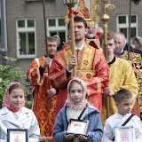
Свв. жен-мироносиц. 04.05.2025
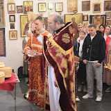
Антипасха. Детский Пасхальный праздник. 27.04.2025
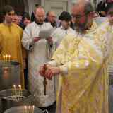
Литургия и Великое освящение воды. 19.01.2024
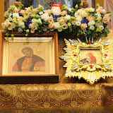
Престольный праздник храма Св.Бл.Вел.князя Александра Невского 6.12.2023 г.
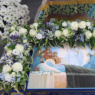
Успение Пресвятой Владычицы нашей Богородицы.
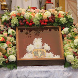
Преображение Господне 2023.
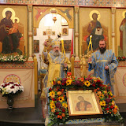
Престольный праздник храма Св.Бл.Вел.князя Александра Невского 4.12.2022 г.
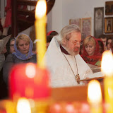
отец Григорий
Освящение памятников на могилах протоиерея Павла и протоиерея Григория Красноцветовых
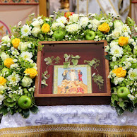
Преображение Господне 2022.
Фотогалерея 2020-2021
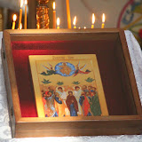
Вознесение Господнe.
10.06.2021 г.
Святое Богоявление. Крещение Господа Бога и Спаса Нашего Иисуса Христа.
19.01.2020 г.
Рождество Христово 2020.
7.01.2020 г.
Фотогалерея 2019г.
ПРАЗДНОВАНИЕ ПРЕСТОЛЬНОГО ПРАЗДНИКА.
2004 - 2019.
7.12.2019 г.
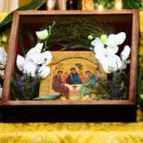
ДЕНЬ СВЯТОЙ ТРОИЦЫ. ПЯТИДЕСЯТНИЦА.
Подробнее...
Фотогалерея 2018г.
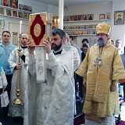
Отдание Преображения.
Чин Погребения Плащаницы. 2018
Преображение Господне. 19.08.2018
Подробнее...
Фотогалерея 2017г.
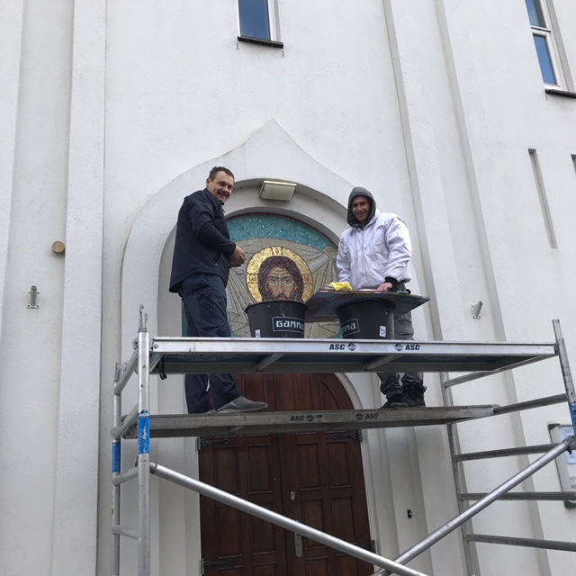
Монтаж мозаичной иконы.
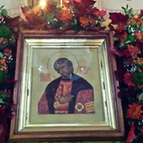
Празднование престольного праздника.
10.12.17
Подробнее...
Фотогалерея 2016г.
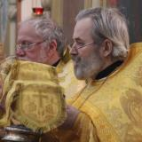
6.12.2016. Литургия в день памяти святого благоверного великого князя Александра Невского.
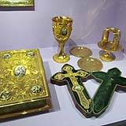
5.10.2016. Открытие выставки во дворце Het Loo, посвященной прибытию Анны Павловны в Нидерланды
Подробнее...
Фотогалерея 2015г.
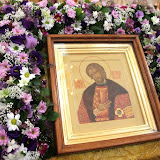
6.12.2015 Престольный праздник храма Александра Невского
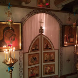
22.11.2015 Престольный праздник храма иконы Божией Матери "Скоропослушницы"
Подробнее...
<<
Первая
<
Предыдущая
1
2
Следующая
>
Последняя
>>
Страница 1 из 2
Разместите
наш баннер
на своем сайте!
Код баннера
смотрите
здесь


")

")